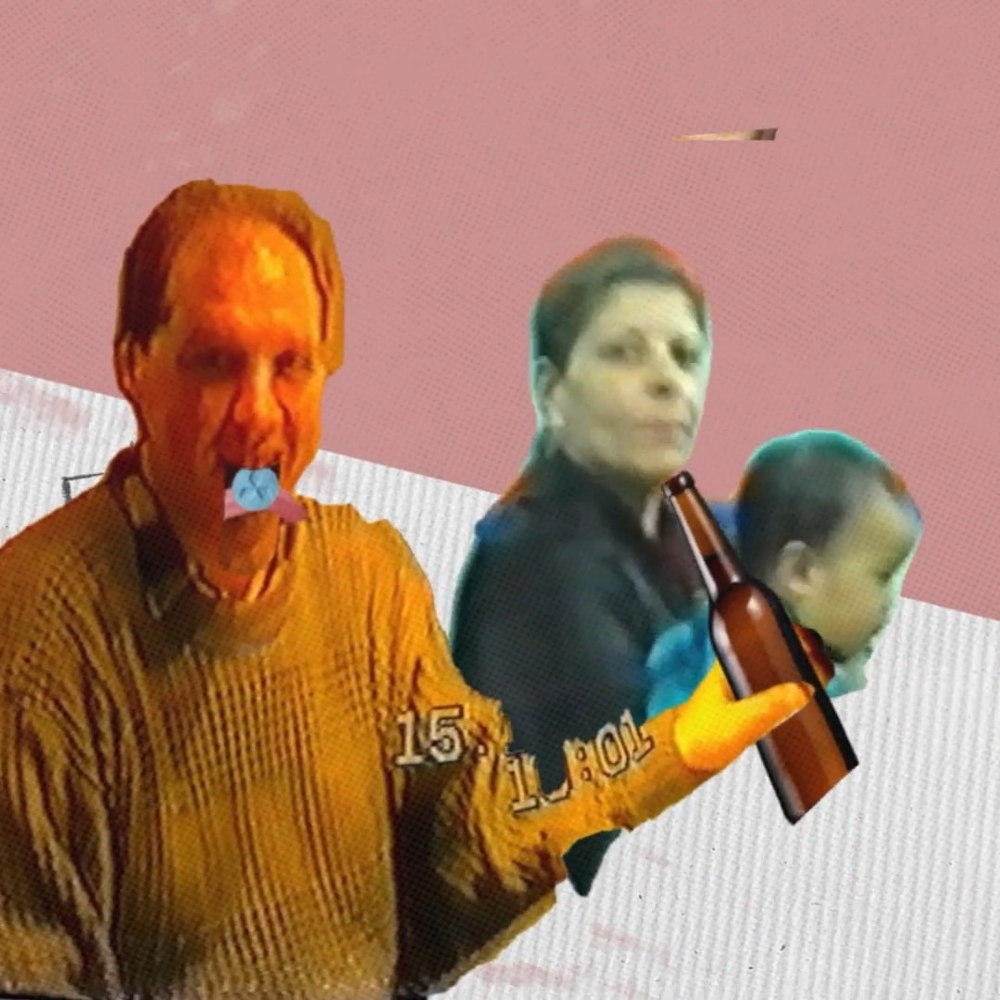
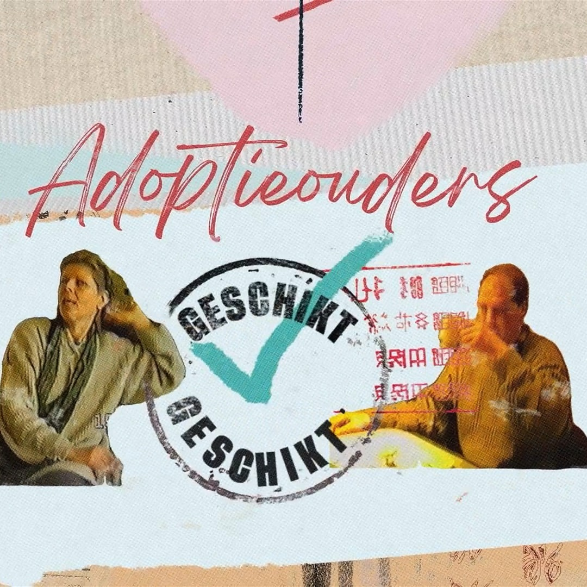
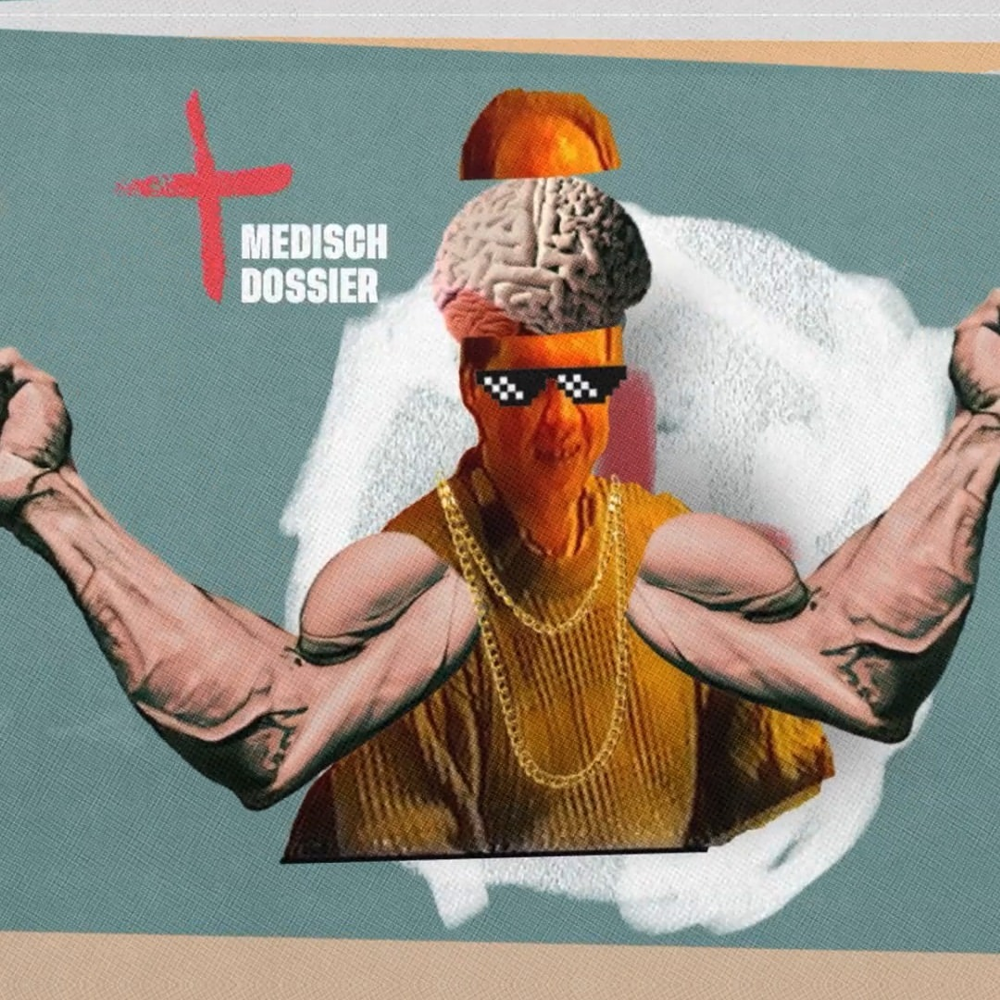

De Afhaalchinees
Voor twee seizoenen van de Omroep ZWART-documentaireserie De Afhaalchinees maken we alle grafische vormgeving en animatie.
We werken nauw samen met maker Qian van Binsbergen, denken conceptueel mee en bepalen samen hoe beeld zich binnen de serie gedraagt. De serie won De Tegel en de Zilveren Nipkowschijf.
De uitdaging
Qian breekt haar eigen adoptieverhaal open en start daarmee een groter gesprek over identiteit, systeemfouten en wat thuis betekent. Zwaar en persoonlijk materiaal, verteld met humor en lef. De vorm moet al die kanten kunnen volgen: rauw waar het moet, helder waar iets uitleg nodig heeft en soms juist licht of onverwacht.


Ons inzicht
Bij De Afhaalchinees is vorm geen laag die achteraf wordt toegevoegd. De vorm is onderdeel van het verhaal. Animatie maakt zichtbaar wat niet is vastgelegd, legt ingewikkelde systemen bloot en geeft ruimte aan herinneringen en emoties die zich niet letterlijk laten filmen.



Onze keuze
We werken als één team met Qian. We spreken elkaar veel, denken conceptueel mee en zetten samen de lijnen uit voor hoe beeld zich binnen de serie moet gedragen. Geen dichtgetimmerde briefing, maar een intieme samenwerking waarin we steeds zoeken naar wat een scène nodig heeft.
Wat we maken
Voor beide seizoenen verzorgen we alle grafische onderdelen en animaties: van inhoudelijke uitleg en visuele metaforen tot titels, overgangen en grafische scènes. Iedere toepassing krijgt een eigen oplossing, maar alles voelt als onderdeel van dezelfde wereld.
Seizoen 1
Voor het eerste seizoen bouwen we een zachte, tactiele collagewereld van archiefmateriaal, papier, tekeningen en pastelkleuren. Die gelaagdheid past bij een onderzoek waarin dossiers, geschiedenis en persoonlijke herinneringen steeds door elkaar lopen. De vorm maakt ingewikkelde systemen inzichtelijk, maar houdt ook ruimte voor Qians humor en de woeste registerwisselingen van de serie.


“Een enerverende achtbaanrit vol animatie, humor en woeste registerwisselingen.”Jury Zilveren Nipkowschijf over seizoen 1
Seizoen 2
In het tweede seizoen verschuift de serie van het onderzoeken van het systeem naar de gevolgen die Qian en andere geadopteerden zelf dragen. De vorm beweegt inhoudelijk mee: het pastel maakt plaats voor rood, rauwe texturen en directere beweging. Nog steeds herkenbaar De Afhaalchinees, maar intenser en dichter op de onvervalste emoties van het verhaal.
“Een ongelooflijk dapper, oprecht en intens proces, en nog wervelend vormgegeven ook.”Trouw over seizoen 2
De Tegel én de Zilveren Nipkowschijf